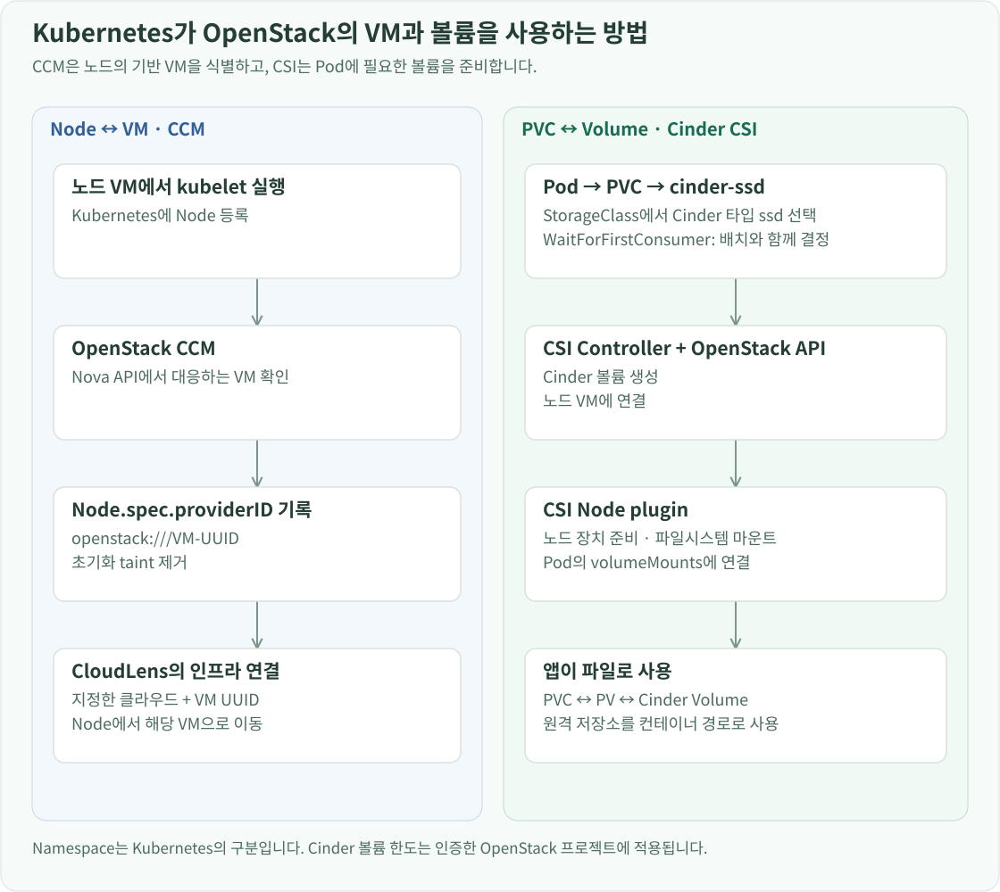

구축 개요
컨트롤 플레인 3대와 일반 워커 2대·GPU 워커 1대를 Kubespray로 구성했습니다. Cilium이 Pod 네트워크를, OpenStack CCM과 Cinder CSI가 VM 식별과 볼륨 연결을 담당합니다.
Kubespray로 클러스터 설치하기
SSH와 VIP가 준비되면 Kubespray로 6대의 VM에 Kubernetes를 설치합니다. Kubespray 원본과 실습 인벤토리를 분리하고, 인벤토리에는 cp-01부터 cp-03을 컨트롤 플레인·etcd 그룹으로, 일반 워커 2대와 GPU 워커를 워커 그룹으로 정의했습니다.
Kubespray는 VM의 기본 운영체제 설정부터 containerd, kubelet, Kubernetes 구성요소와 CNI까지 설치합니다. 컨테이너 런타임은 containerd, Pod 네트워크는 Cilium을 사용합니다. 각 노드에서 런타임과 kubelet을 따로 맞추는 대신 Kubespray 인벤토리와 변수로 같은 구성을 적용했습니다. 현재 Kubespray 버전은 v2.32.0입니다.
주요 설정은 다음과 같습니다.
kube_version: v1.36.4
container_manager: containerd
kube_network_plugin: cilium
kube_pods_subnet: 10.233.64.0/18
kube_service_addresses: 10.233.0.0/18
kube_owner: root
VM 대역, Pod 대역, Service 대역을 겹치지 않게 정했습니다. 10.0.0.x는 노드에 접속할 때 쓰는 주소이고, 10.233.x.x는 Kubernetes 안에서 사용하는 주소입니다. Cilium의 호스트 파일 접근 요구에 맞춰 kube_owner도 지정했습니다.
GPU 워커에는 enable_cdi: true를 지정해 뒤에서 DRA가 준비한 장치 정보를 containerd가 사용할 수 있게 했습니다.
인벤토리와 변수 파일은 설치 대상과 적용할 설정을 구분합니다. hosts.yaml은 접속할 VM과 그룹을 정합니다. group_vars/k8s_cluster/ 아래의 변수는 그 그룹에 속한 노드에서 실행하는 작업에 적용되고, GPU 워커만 다른 값은 해당 호스트 변수로 둡니다. 그룹 이름이 적용 대상을 결정하는 것이지, 변수 파일을 만든 것만으로 설치가 실행되는 것은 아닙니다. Kubespray의 플레이북과 role 안의 task가 그 값을 읽고 SSH로 대상 VM을 설정합니다.
Mac의 Kubespray 원본 디렉터리에서 실행하는 흐름은 다음과 같습니다. 실습 인벤토리는 원본과 별도로 ../inventory/lab/에 두었습니다.
python3 -m venv .venv
source .venv/bin/activate
python -m pip install -r requirements.txt
ansible-playbook -i ../inventory/lab/hosts.yaml cluster.yml
-r requirements.txt로 해당 Kubespray 버전의 Python 의존성을 설치하고, -i로 실습 노드 목록을 선택합니다. cluster.yml이 설치 작업을 실행하며, 인벤토리의 SSH 사용자 ubuntu와 개인키 경로를 사용합니다.
API 접속 주소는 개별 컨트롤 플레인이 아닌 10.0.0.30:6443으로 설정하고, API 서버 인증서의 SAN에도 VIP를 포함했습니다. kubeconfig를 Mac으로 가져온 뒤 이 주소로 접속하면 HAProxy가 동작 중인 API 서버로 전달합니다.
여기까지 완료되면 Kubernetes 자체는 Pod를 배치할 수 있습니다. 그러나 Kubernetes Node와 OpenStack VM의 관계, PVC와 Cinder 볼륨의 관계는 아직 별도 연동이 필요합니다. 이를 CCM과 CSI로 각각 연결했습니다.
API endpoint는 Kubespray 변수에서도 같은 VIP를 사용합니다.
loadbalancer_apiserver:
address: 10.0.0.30
port: 6443
loadbalancer_apiserver_localhost: false
loadbalancer_apiserver_localhost: false는 각 노드의 로컬 로드밸런서 대신 앞에서 준비한 외부 LB를 사용하게 합니다.
CCM·CSI로 OpenStack의 VM과 볼륨 연결하기

CCM: Kubernetes Node에 OpenStack VM 식별자 기록
CCM은 Kubernetes가 외부 클라우드의 노드 정보를 사용하도록 연결하는 구성요소입니다. 이 환경은 Kubespray 인벤토리에서 외부 OpenStack CCM을 관리합니다.
cloud_provider: external
external_cloud_provider: openstack
external_openstack_lbaas_enabled: false
external_openstack_cloud_controller_extra_args:
controllers: cloud-node,cloud-node-lifecycle
cinder_csi_enabled: false
OpenStack 인증 설정은 외부 설정 파일에서 읽어 CCM의 Secret에 전달합니다. CCM은 컨트롤 플레인에 배치되고, 리더로 선출된 인스턴스가 워커를 포함한 노드들을 관리합니다. LB는 앞에서 만든 HAProxy·Keepalived를 사용하므로 CCM의 LoadBalancer 기능은 활성화하지 않았습니다. CSI는 별도 Helm 릴리스로 관리하므로 Kubespray에서 중복 설치하지 않습니다.
이 클러스터에는 CCM보다 먼저 등록된 Node도 있었기 때문에 kubelet을 외부 CCM 모드로 바꾸는 작업과 기존 Node의 초기화가 모두 필요했습니다. CCM이 정상 실행되는 상태에서 기존 노드에 node.cloudprovider.kubernetes.io/uninitialized taint를 부여해 클라우드 초기화 대상으로 표시했습니다. CCM은 OpenStack VM을 확인하고 providerID를 기록한 뒤 이 taint를 제거합니다.
spec:
providerID: openstack:///해당-VM의-UUID
이 값으로 Kubernetes 노드와 Nova 인스턴스를 이름 추측 없이 연결할 수 있습니다. CloudLens의 Pod → Node → VM 추적도 이 UUID를 사용합니다. 컨트롤 플레인에 남는 node-role.kubernetes.io/control-plane:NoSchedule은 일반 Pod의 배치를 제한하는 별도 taint이므로 CCM 초기화와 구분합니다.
Cinder CSI: PVC 요청을 실제 SSD 볼륨으로 변환
Cinder CSI는 Helm으로 설치했습니다. Controller는 볼륨 생성·연결을 처리하고, 각 노드의 CSI 플러그인은 해당 볼륨을 노드에 준비하고 Pod에 마운트합니다. OpenStack 인증정보는 cinder-csi-cloud-config Secret에서 읽습니다.
CSI에는 프로젝트에 귀속된 Application Credential을 발급하고 member 역할로 볼륨을 생성·연결하도록 구성했습니다. Kubernetes Namespace가 OpenStack 프로젝트로 자동 변환되는 것은 아닙니다. 여러 Namespace가 PVC를 만들더라도 CSI가 사용하는 자격증명의 프로젝트에 볼륨이 생성되므로, 그 프로젝트의 권한과 quota가 공통으로 적용됩니다.
Pod가 사용할 저장소의 기본 규칙은 cinder-ssd StorageClass로 선언했습니다.
apiVersion: storage.k8s.io/v1
kind: StorageClass
metadata:
name: cinder-ssd
provisioner: cinder.csi.openstack.org
parameters:
type: ssd
csi.storage.k8s.io/fstype: ext4
allowVolumeExpansion: true
reclaimPolicy: Delete
volumeBindingMode: WaitForFirstConsumer
type: ssd가 앞에서 만든 Cinder 볼륨 타입을 선택합니다. WaitForFirstConsumer는 PVC를 사용할 Pod의 배치와 연계해 볼륨을 준비하게 합니다. 따라서 PVC만 생성하면 볼륨 준비를 보류하고, 이를 사용할 Pod의 배치 조건이 정해진 뒤 프로비저닝을 진행합니다.
연결은 PVC → StorageClass → Cinder CSI → Cinder ssd 타입 → SSD 백엔드 → 노드 연결 → Pod 마운트 순서입니다. 모델 가중치, WebUI 데이터, Prometheus 시계열이 모두 이 경로로 저장됩니다. PVC를 삭제하면 볼륨도 삭제하는 Delete 정책은 Terraform의 VM 부팅 볼륨 보존 설정과 별도로 적용됩니다.
Secret과 values 파일을 준비한 뒤 Cinder CSI 차트를 설치하고 StorageClass를 적용했습니다. 다음 명령의 파일 경로는 인프라 설정을 관리한 저장소 기준입니다.
helm upgrade --install cinder-csi openstack-cinder-csi \
--repo https://kubernetes.github.io/cloud-provider-openstack \
--version 2.36.5 --namespace kube-system \
--kube-context openstack-k8s-llmd-lab \
--values infra/helm/cinder-csi/values.yaml --wait
kubectl --context openstack-k8s-llmd-lab apply \
-f infra/helm/cinder-csi/storageclass.yaml
upgrade --install은 릴리스가 없으면 설치하고 있으면 지정한 설정으로 갱신합니다. --version으로 차트 버전을, --values로 인증 Secret 참조와 배치 설정을 고정하고, --wait로 준비 상태를 기다립니다.
구축 중에는 SSD 공간이 남아 있는데도 PVC가 생성되지 않는 경우가 있었습니다. PVC 이벤트의 CreateVolume failed와 exceeded quota를 따라가니, 프로젝트의 볼륨 개수 한도에 걸려 있었습니다. Kubernetes·LB VM의 루트 볼륨 8개와 다른 볼륨들이 같은 한도를 사용하고 있었기 때문입니다. 볼륨 개수 quota를 조정한 뒤 CSI의 재시도로 생성이 진행됐습니다. 저장소 연결에는 디스크와 드라이버뿐 아니라 CSI가 사용하는 프로젝트의 볼륨 개수·용량 한도도 준비해야 했습니다.
CCM은 v1.36.0 이미지와 external-openstack-cloud-config Secret의 cloud.conf를 사용합니다. Cinder CSI는 2.36.5 차트와 v1.36.0 드라이버를 사용하고, secret.create=false로 준비한 인증 Secret을 참조합니다. CSI controller는 worker-01에 한 개를 배치했습니다.
GPU Operator와 DRA를 연결하면 GPU 워커의 장치를 모델 Pod에서 사용할 수 있습니다.